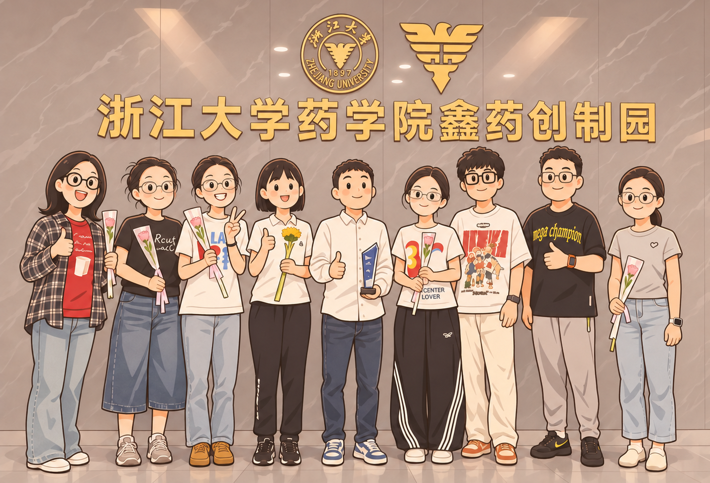
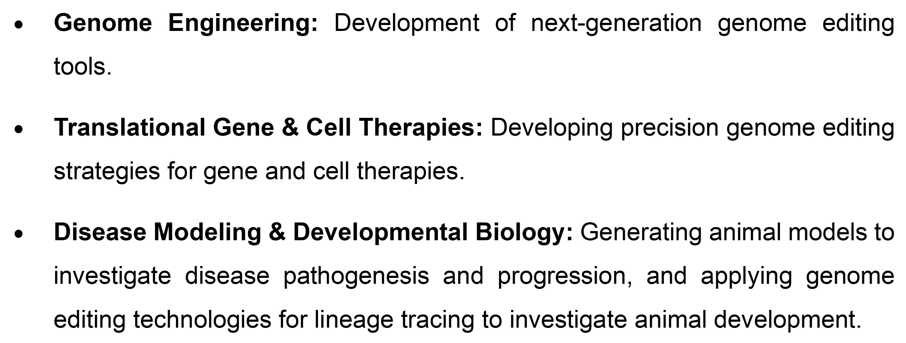
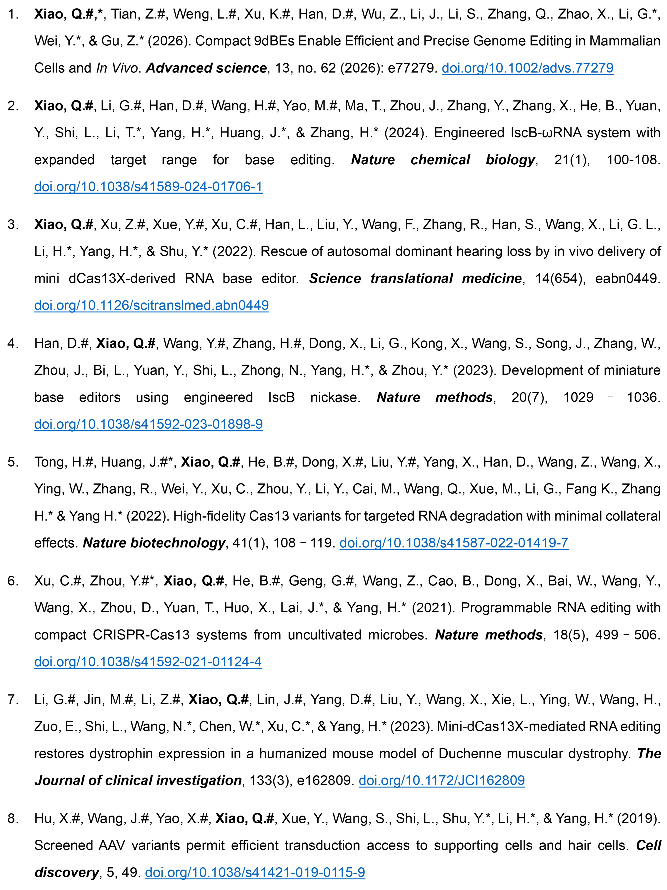
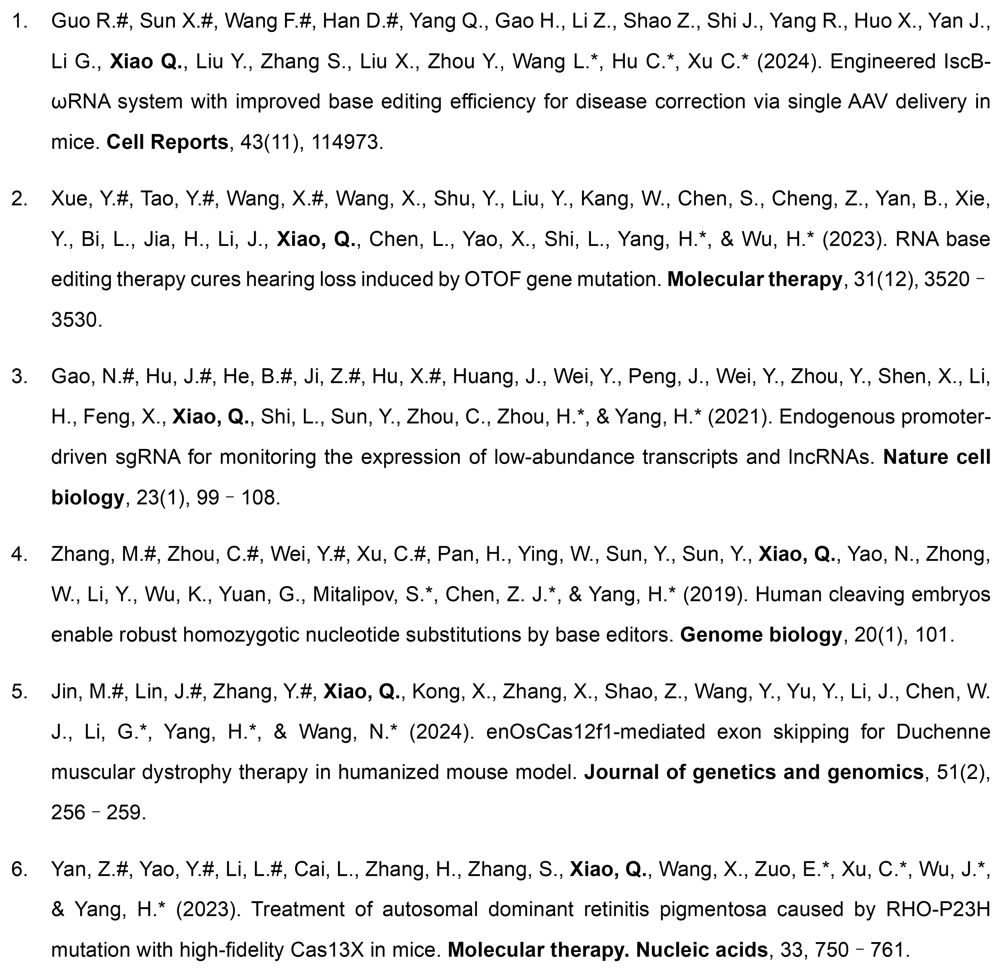
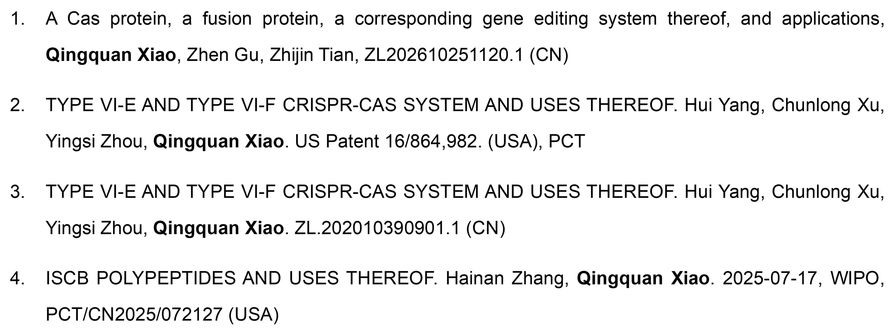
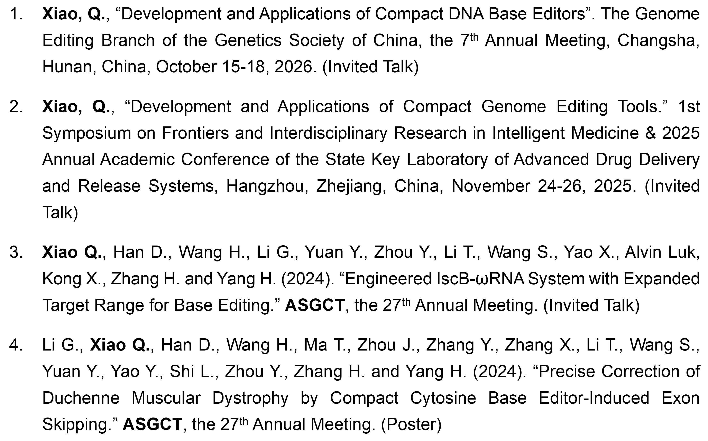

Principal Investigator
Qingquan Xiao, Ph.D., is a Principal Investigator at the Jinhua Institute of Zhejiang University and the School of Pharmacy, Zhejiang University, and a member of Gu iMedication Lab. He leads an independent research group focused on developing next-generation genome editing tools and gene therapies.
Prior to joining Zhejiang University, Dr. Xiao was a postdoctoral fellow at the Center for Excellence in Brain Science and Intelligence Technology (Institute of Neuroscience), Chinese Academy of Sciences. He received his Ph.D. in Neurobiology from the University of Chinese Academy of Sciences, where he conducted his doctoral research in the Non-human Primate Disease Models Laboratory, and earned his bachelor's degree in Biology from Sichuan University.
Dr. Xiao was selected for the Shanghai Postdoctoral Excellence Program, and his work has been published in Nature Biotechnology, Nature Methods, Nature Chemical Biology, Science Translational Medicine, Advanced Science, Journal of Clinical Investigation, and Cell Discovery, with contributions as a first, co-first, or co-corresponding author. Dr. Xiao also serves as a peer reviewer for scientific journals and academic publishers, evaluating manuscripts and book chapters.
Team

Our team currently consists of one postdoctoral researcher, two Ph.D. students, and five graduate students.
Research Interests

Selected Publications
# denotes first or co-first authors.

Other Publications

Patents

Conference Presentations
